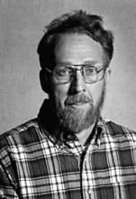

Please note: the AAS Obituaries are temporarily being hosted on this website while their full content is being ingested into the PubPub publishing platform newly adopted by the Bulletin of the American Astronomical Society. When the migration is complete, your existing links will take you to the final, migrated content. Contact peter.williams@aas.org with any questions.
George Edward Langer (1936-1999)
George Edward Langer, Professor of Physics at Colorado College, died of a pulmonary embolism February 16, 1999, in Colorado Springs. He had just begun treatment for lymphoma. He is survived by his sister Judy Corning, his wife, Jo, and his three children, Mary, Sarah and James.
Ed was born July 17, 1936, in Madison, Wisconsin. He earned a BA and BS from Notre Dame University in 1959, and attended Cornell University as a Woodrow Wilson Fellow. After earning an MS in physics Ed taught for two years at Tuskegee Institute as a Woodrow Wilson Teaching Intern. In 1965 he returned to his graduate studies, earning his PhD in Astrophysics under the direction of J.P. Cox at the University of Colorado in 1969. In his thesis he explored the stellar structure of long-period variables and this topic provided a springboard for his later studies of the evolution of late-type stars in general. In particular, in a 1973 paper, he was the first to explain the chemical evolution of the strange variable star FG Sagittae, an object in which the enhancement of s-process species by a factor of 10-100 goes on before our very eyes.
After Ed received his doctorate, he joined the Department of Physics at Colorado College (CC), where he taught undergraduate physics and astronomy. With disheveled hair, rumpled sweater and hiking boots, he was a familiar figure on the CC campus. However, the boots came off as soon as he got to his office, and he padded around in slippers or stocking feet for the rest of the day. He also had an aversion to ties, and there is an apocryphal story that he wore one only for his wedding, his children's weddings, and some of their graduations. Every school has a few outstanding teachers that students advise one another not to miss. Ed was one of those teachers at CC. His enthusiasm for physics and his obvious love of teaching drew students from all parts of the campus. He also loved to carry on research in astronomy. From 1971 to 1998 he regularly visited the Lick Observatory, UC Santa Cruz, during the summer and during five sabbatical leaves. On visits to Lick and to Austin from 1980 onwards, he was the real source of knowledge in the areas of stellar structure, stellar evolution and nuclear astrophysics for the "Lick-Texas" group. They were studying the chemical composition of metal-poor giants in the Galactic halo, based on high resolution spectra obtained at Lick, McDonald and Keck. Ed was especially interested in the problem of "deep mixing," in which the ashes of CNO cycle hydrogen burning are mixed into the atmospheres of such stars as they proceed from the main sequence up the giant branch into later evolutionary stages. He made seminal contributions to understanding the consequences of deep mixing, including not only the apparent depletion of C and O and corresponding enhancement of N, but also the production of Na and Al at the expense of Ne and Mg, respectively. With Rob Hoffman (UCSC) and Clyde Zaidins (CU Denver), he explored the possible production of27 Al from24 Mg, as well as the production of23 Na from22 Ne and20 Ne, noting the conditions of shell temperature and pressure under which such transmutations would take place. He was the first to understand and describe at least two important consequences of deep mixing among globular cluster stars ascending the giant branch for the first time. First, he realized the atmospheric H/He ratio would change, with important ramifications for the color distribution of the horizontal branch. Secondly, that the introduction of fresh H from the envelope into the shell would slow the evolution and lead to an excess of bright giants above the predictions of standard evolutionary theory. Both of these predictions seem to have been borne out in recent investigations of HB morphology and globular cluster luminosity functions. Ed's colleagues will remember a salient feature of his outlook on science: think the problem through, make reasonable estimates, always look into the physics first. See what you can do before calling in the large computer programs. With Ed, there was always a sense of basic modesty and honesty, as he balanced his life between his teaching and mentoring of students and his lively interest in the mysteries of stellar evolution.
Photo courtesy Colorado College.
Obituary written by: Robert P. Kraft (University of California, Santa Cruz), Richard L. Hilt (Colorado College)
BAAS Citation: BAAS, 1999, 31, 1602
SAO/NASA ADS Bibcode: 1999BAAS...31.1602K